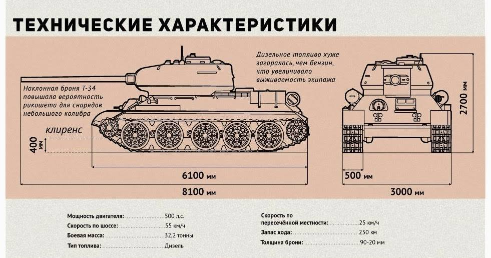

Общая информация
Классификация — средний танк;
Боевая масса — 32,2 т;
Компоновочная схема – классическая;
Экипаж – 5 человек;
Годы производства – 1943-1958;
Годы эксплуатации – 1944 по 1993 (официально в СССР и РФ);>
Количество выпущенных — более 35 000 штук.